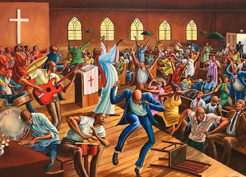
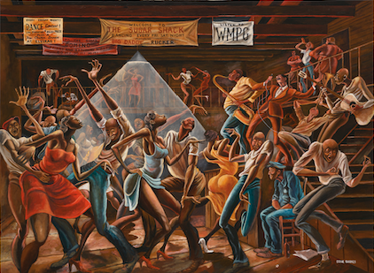

Beyoncé is a masterful vocalist, dancer, and overall musical visionary. Her level of creativity, intention, and dedication to her craft makes her parallel to none. I was blessed to witness her greatness on stage twice this August attending her Renaissance World Tour in Las Vegas and Santa Clara. Besides being a masterful performer, the references and details throughout her show ranged from queer ballroom culture, black jockey/rodeo culture, Afrofuturism, Thea von Harbou’s Metropolis, and work by Hajime Sorayama.Beyoncé has been intentional with every aspect of her art since she took creative control over her career in 2011, decided to manage herself, and started her own record label. I could write an entire research paper on each album, film, and performance she’s produced since 2011 to now, highlighting references and elements that are culturally significant and meaningful.
Overall, she’s a powerhouse, inspires my passion for creating cultural connections through my work, and furthermore she’s taught me to have a keen ear and eye to pick up on references of Black artists that came before her.
Guo Pei is a fashion designer and couturier who has surpassed limitations to become one of the greatest artisans in history. I first became aware of her work after seeing photos of Rihanna at the 2015 Met Gala. I gained an even deeper appreciation for her story and her craftsmanship after I viewed her work at the Legion of Honor in 2022. The level of detail and intention is evident in each stitch, patch, and bead!!!
I was even more fascinated to learn that she was born and raised during Mao Zedong’s regime wear excess clothing and anything fashion item that gave validity to the existence of “class” was banned outright. However, under an oppressive regime her passion and taste for opulence thrived. Following the death of Mao Zedong, economic and social reforms begin, and is known as “Reform and Opening-up”. Before the reforms China was almost entirely a working class society. By the early 1980s a new middle class emerged in Chinese cities. In 1986, Guo Pei graduated from Beijing Second Light Industry School with a degree in fashion design and worked for various brands for a decade after. In 1997, she formed her own fashion label and atelier, Rose Studio, and at that point, the demand for stylish fashions grew across China. In the early 2000’s, she designed styles for some of China’s elite and for the 2008 Summer Olympics hosted in Beijing. Following Rihanna’s debut in the Yellow Canary gown, Guo received international acclaim, was invited to join Paris Couture week, and became China’s first couturier.
The saying is “Capitalism breeds innovation” but in my personal opinion, oppression breeds rebellion which cultivates innovation. Guo Pei’s passionate use of textiles to create lush works of art, has cemented her legacy as China’s most renowned couturier, and one of the greatest designers in history.
Ernie Barnes was a painter that captured Black culture in the most elegant and beautiful way. Many of the figures in his paintings have elongated limbs and features, which exaggerate their movement. Throughout his childhood, he was always drawing in his notebook. “At age 18, on a college art class field trip to the newly-desegregated North Carolina Museum of Art in Raleigh, Barnes inquired where he could find “paintings by Negro artists.” The docent responded, “Your people don’t express themselves that way.” 23 years later in 1979 Barnes returned to the museum for a solo exhibition, and North Carolina Governor James Hunt attended” (OFFICIAL WEBSITE OF ARTIST ERNIE BARNES).
I first learned of Barnes after seeing the cover of Marvin Gaye’s album I Want You. The cover art is Barnes’ most famous painting is titled The Sugar Shack.
Barnes painted two versions of The Sugar Shack, which depicts dynamic, elongated figures dancing in a crowded Black music hall in segregated mid-century North Carolina. The first version was acquired by Marvin Gaye, for the cover of his album and the second version gained additional popularity when it was added to the end credits of the sitcom Good Times. Barnes was also a professional NFL player before he became an artist full-time, and he depicts the sport in his work as well. Barnes’ art for me is soul stirring. The way in which he depicts movement and emotion, truly invokes a visceral reaction.